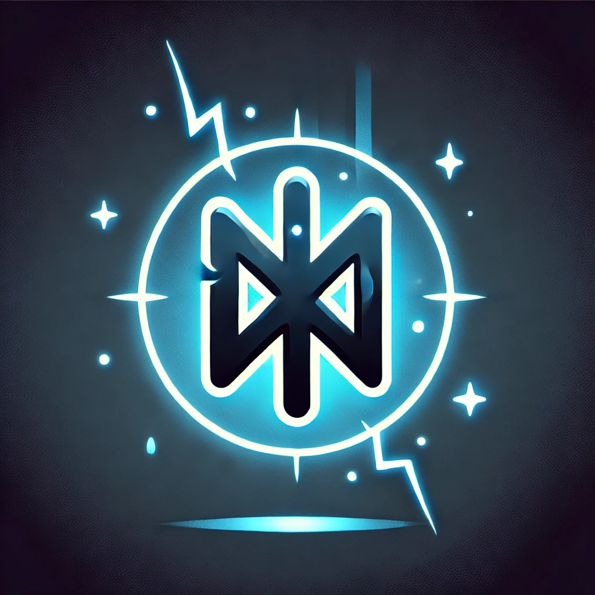
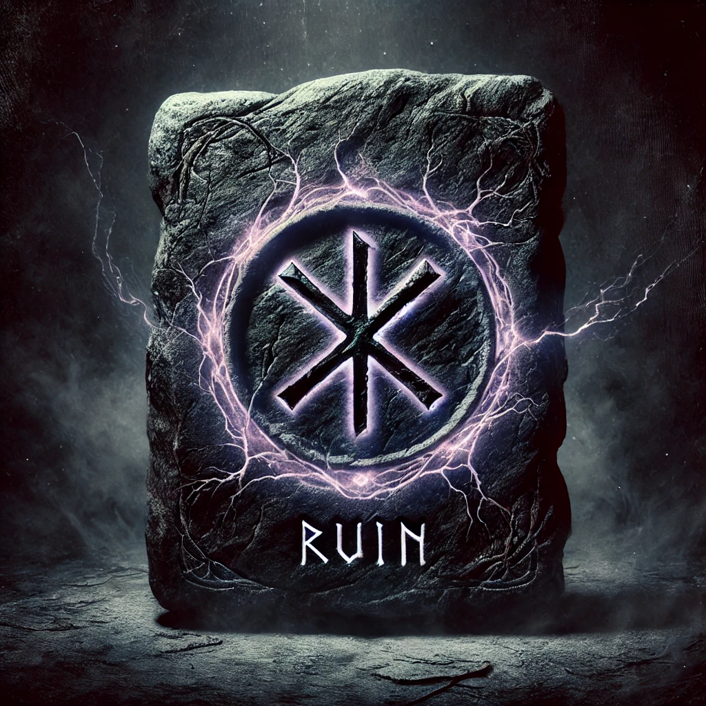
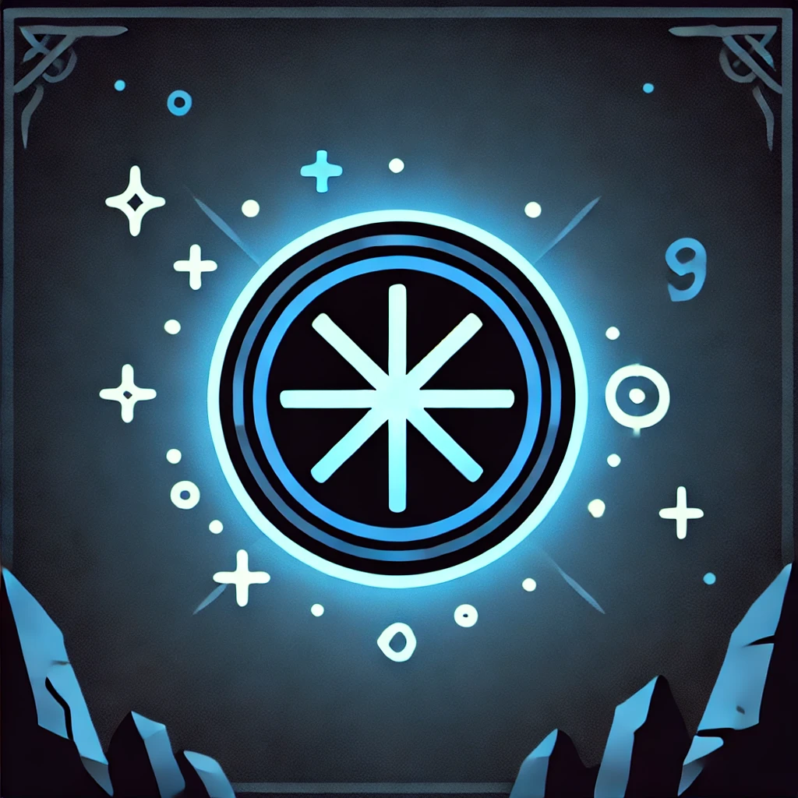
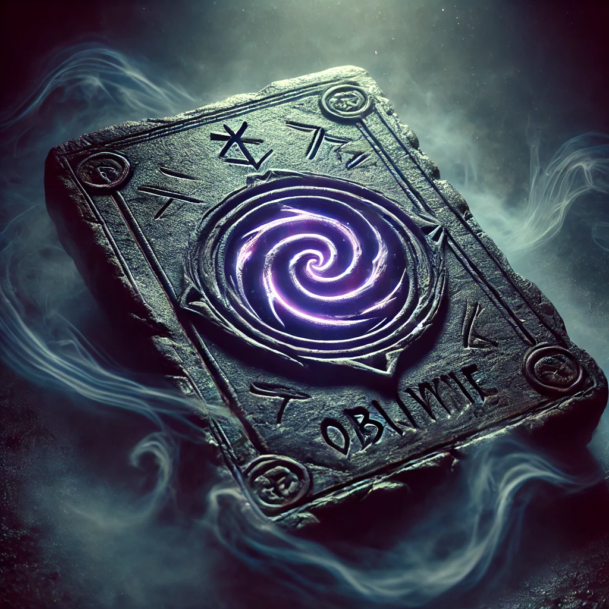
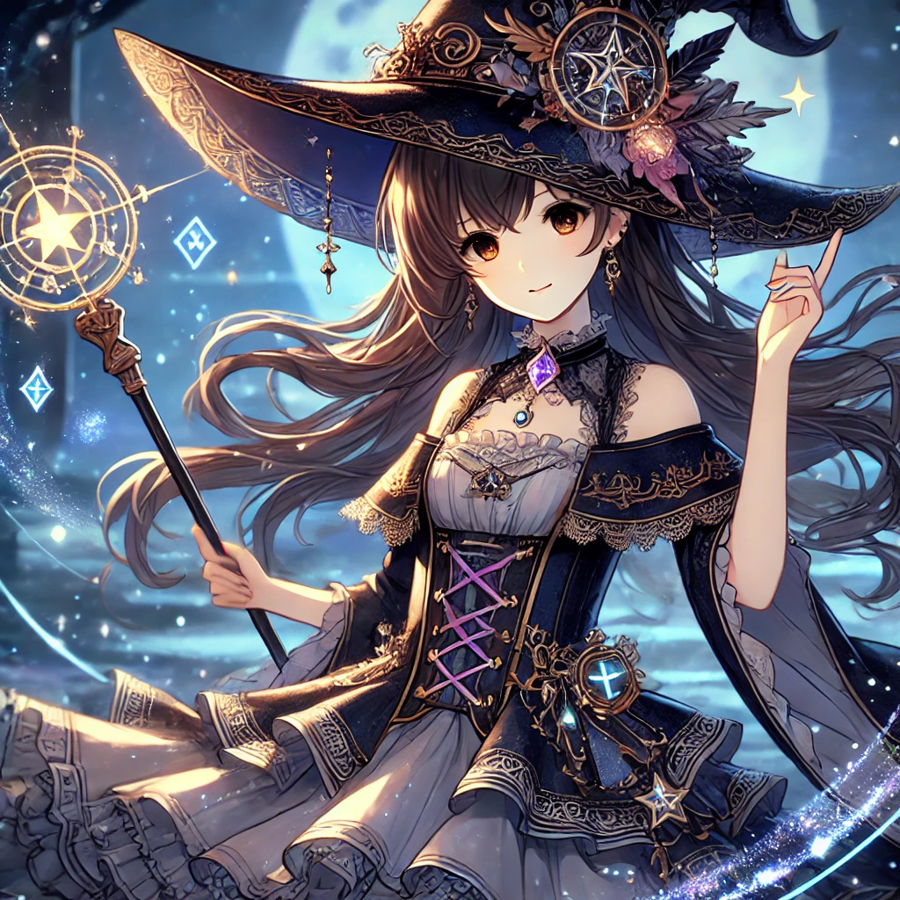

"Four marks appear upon your skin, each whispering fate’s design. One leads to power, another to ruin, the third to wisdom, the last to oblivion. Choose carefully—only one path grants you the witch’s true mark."




You are consumed by power. The mark glows fiercely, but your soul fades into darkness. ⚡
A curse spreads through your veins. The mark burns, sealing your fate. 🔥
The mark shimmers, and you hear ancient whispers. You have chosen well. 📖
The mark vanishes. You are erased from time itself. 🌑

You have claimed the Witch’s Mark. Destiny is now in your hands. 🧙♀️✨